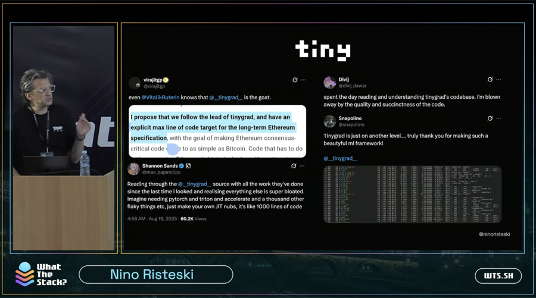
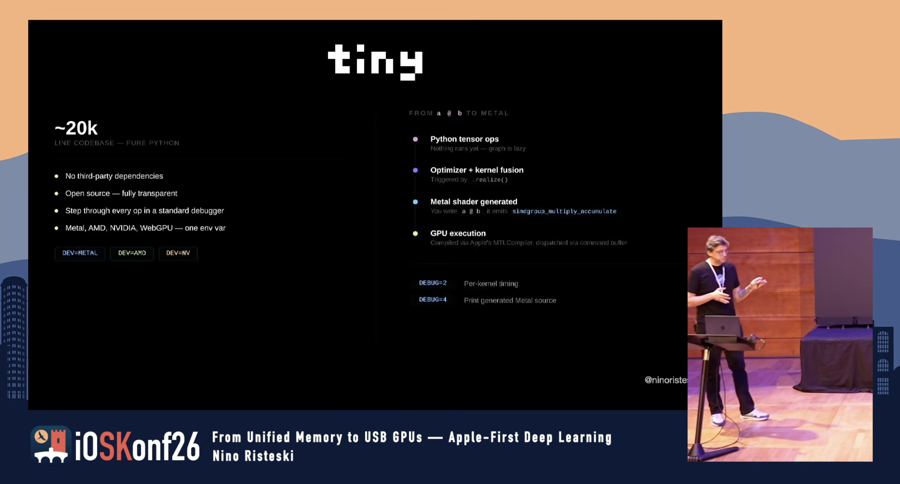

ML & Data Lead at IVTM Analytics, an open-source contributor, GPU experimentalist and researcher.
I care about building useful and tasteful software, understanding the low level pieces behind deep learning and moving quickly from rough idea to complete product.
Obsessed about compilers, GPUs, ML infrastructure, and AI research.


Metal compute shader experiments for SGEMM (4x4 tiles) that explore Apple GPU optimization and benchmarking.
AI agent that helps you learn TinyGrad and keeps you updated on bounties, featuring RAG with ChromaDB and GPT integration.
Ask Dr. Andrew Huberman questions and receive answers directly from his podcast episodes.
A tool that renames screenshots immediately based on the context in the screenshot.